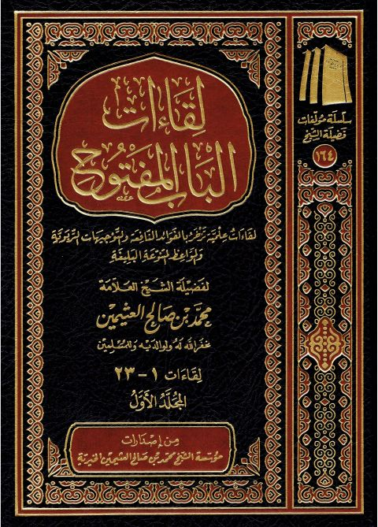

Downloads need an internet connection.
لقاءات الباب المفتوح- أجزاء
Authors: محمد بن صالح العثيمين
Publishers: مؤسسة الشيخ محمد بن صالح العثيمين الخيرية
▫️ العنوان: لقاءات الباب المفتوح- أجزاء ▪️ المؤلف: #محمد_بن_صالح_العثيمين ▫️ الناشر: #مؤسسة_الشيخ_محمد_بن_صالح_العثيمين_الخيرية ▪️ تاريخ النشر: 1438هـ 2017م ▫️ بلد النشر: القصيم، #السعودية ▪️ الطبعة: 1 ▫️ عدد الأجزاء: 10 ▪️ الصفحات: 6570 ▫️ نوع الوعاء: #كتاب ▪️ التصنيف الرئيسي: #الفقه_وأصوله ۪